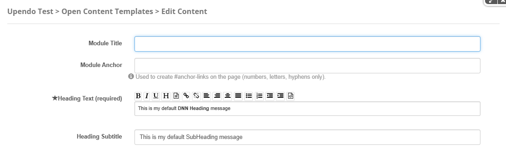

Porto-Headings Documentation
Table of Contents
Overview
The Porto-Headings component allows you to customize titles and headings on your website, offering options for size, color, alignment, and style to enhance the visual hierarchy of your content. Porto defines the appearance and behavior of headings, while their implementation is managed through OpenContent, providing greater flexibility.
For more details, check out the Porto-Headings repository on GitHub or the Porto documentation.
Usage Example
Edit
Properties
| Field Name | Type | Description | Required |
|---|---|---|---|
| Module Title | String | Used to define the title of the module. This title is displayed in the DNN administration interface to help identify the module. | No |
| Module Anchor | String | Used to create anchor links on the page. This allows users to link directly to the module using a unique identifier. Only letters, numbers, and hyphens are allowed. | No |
| Heading Text | Wysihtml | The main heading text. | Yes |
| Heading Subtitle | Text | The subheading text. | No |
Settings

Settings Properties
| Setting | Type | Description | Options |
|---|---|---|---|
| Heading Type | Select | Defines the heading level. | h1, h2, h3, h4, h5, h6 |
| Heading Color | Select | Specifies the color of the heading. |
|
| Uppercase | Select | Applies uppercase styling to the heading. | Enabled, Disabled |
| Enable Heading Border | Checkbox | Enables or disables the heading border. | true, false |
| Border Style | Select | Defines the style of the border. | Single Border Bottom, Double Border Bottom, Left Heading With Border, Right Heading With Border, Center Heading With Border |
| Border Size | Select | Specifies the size of the border. | Simple, Bold, Bolder |
| Border Color | Select | Specifies the color of the border. |
|
| Margin (top) | Select | Defines the top margin of the component. | mt-0, mt-1,mt-2, mt-3, mt-4, mt-5,
and mt-auto.
|
| Margin (bottom) | Select | Defines the bottom margin of the component. | mb-0, mb-1,
mb-2, mb-3, mb-4, mb-5, and
mb-auto.
|
| Padding (top) | Select | Defines the top padding of the component. | pt-0, pt-1,
pt-2, pt-3, pt-4, pt-5, and
pt-auto.
|
| Padding (bottom) | Select | Defines the bottom padding of the component. | pb-0, pb-1,
pb-2, pb-3, pb-4, pb-5, and
pb-auto.
|
Views
Below are examples of the different styles and configurations available for the Porto-Headings component. Each style is customizable and can be adapted to your design needs.
Default Heading:
Left Heading With Border:
Right Heading With Border:
Center Heading With Border:
Heading with Different Border Sizes:
Colors Heading:
Colors Heading with Bottom:
Heading with Highlight Colors:
Heading With Subtitle: